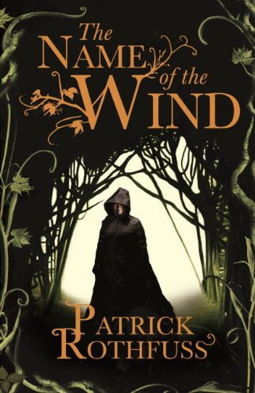
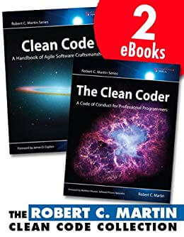
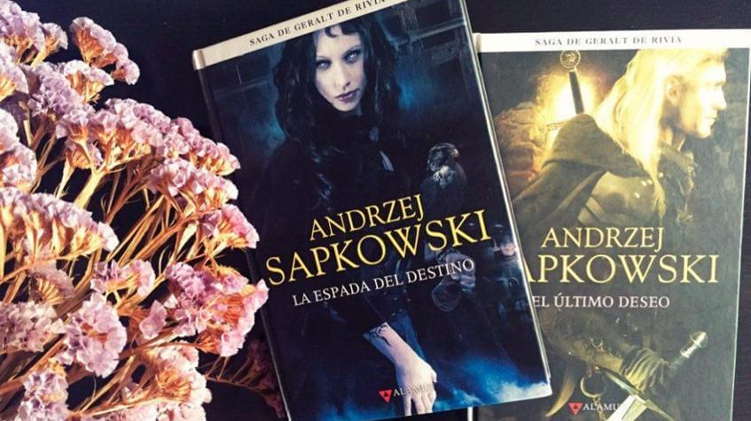
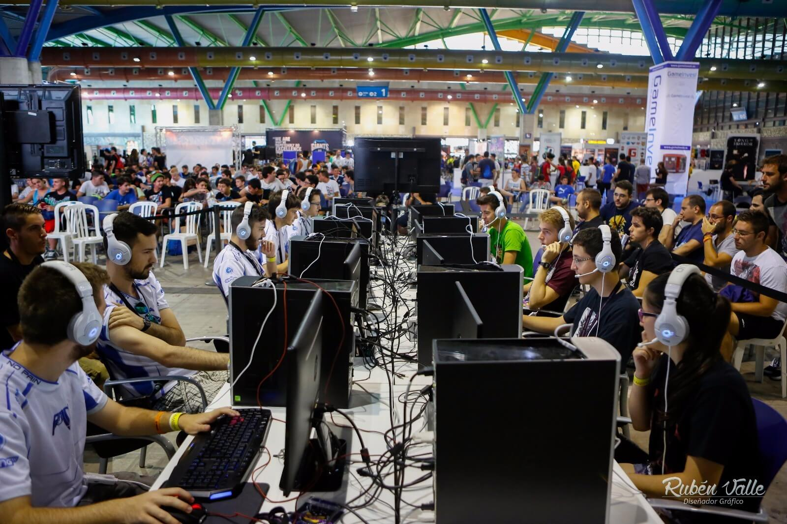
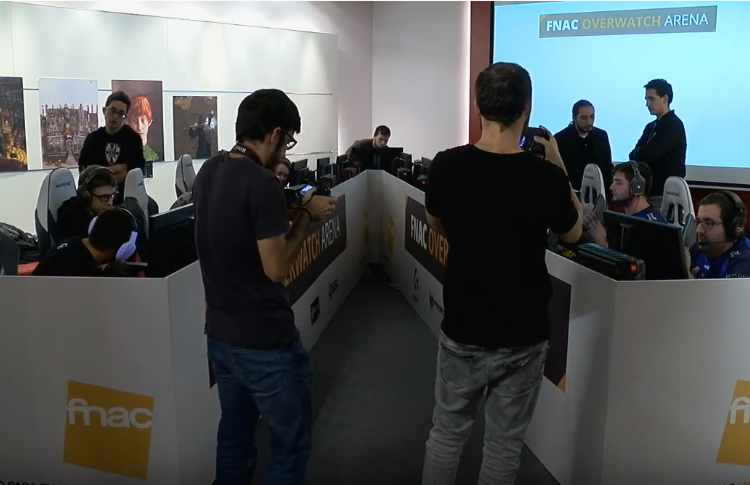
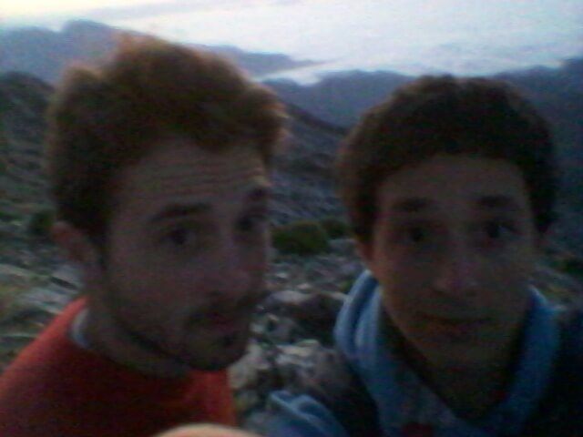

Reading books
I have read books since I can remember. My favorite genre is fantasy and I read in both Spanish and English. Regarding technical books I have read Clean Code, Clean Architecture and Clean Coder
  Videogames
I have been coach/analyst of one of the best spanish team in Overwatch +Info. I have also written news, casted tournaments, organized tournaments. I am now with a couple more programmers to make a project for a game that is in development
 Hiking
I have done several types of sports. From tennis to kungfu. I don't commit myself to the same sport for years, although I have always liked outdoor sports and I have always loved hiking

Disassembling/Assembling electronic devices
I am the tech-guy of my friends and family. I have budgeted and set up computers for several friends of mine. I have lost count of how many times I have opened an electronic device (laptop, remote, smart plug, arcade sticks ...)